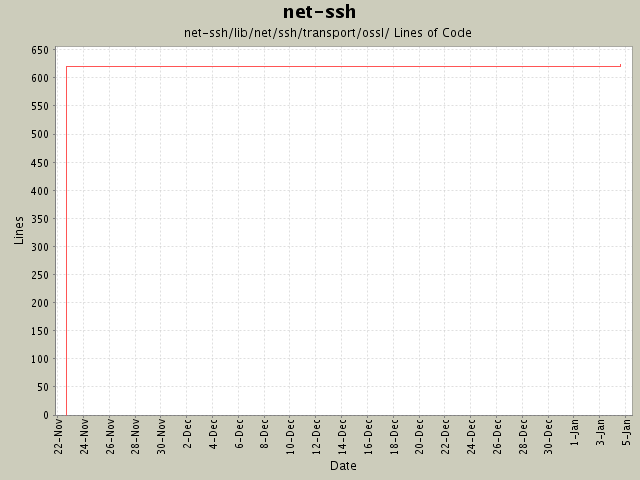

Summary Period: 2004-11-22 to 2005-01-04
[root]/net-ssh/lib/net/ssh/transport/ossl
 hmac
(7 files, 355 lines)
hmac
(7 files, 355 lines)

Total Lines Of Code:
624 (2005-01-07 15:12)
| Author | Changes | Lines of Code | Lines per Change |
|---|---|---|---|
| minam | 8 (100.0%) | 625 (100.0%) | 78.1 |
Raise an error if an attempt is made to load a file as a public key, which
is not a public key.
4 lines of code changed in:
Initial revision
621 lines of code changed in:
Generated by StatCVS 0.2.3